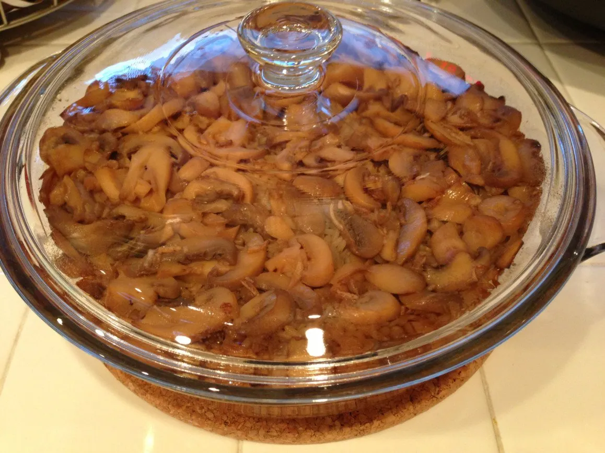
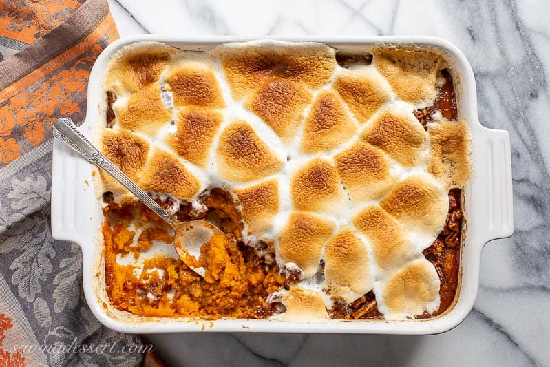

Aunt Karen's Funnel Cake
Ingredients:
- 1 quart vegtable oil for frying, or as needed
- 1 1/2 cups milk
- 2 large eggs
- 2 cups all-purpose flour
- 1 teaspoon baking powered
- 1/2 teaspoon ground cinnamon
- 1/2 teaspoon salt
- 3/4 cup powdered sugar
Directions:
- Heat oil to 375 degrees F (190 degrees C) in a heavy skillet or deep fryer
- Beat milk and eggs together in a large bowl. Combine flour, baking powder, cinnamon, and salt in a separate bowl; stir into egg mixture until smooth.
- Use your finger to cover the funnel hole; pour about 1 cup of batter into the funnel. Starting in the center of the skillet, remove your finger and move the funnel in a swirling motion to make a 6- or 7-inch round. Fry in hot oil until bottom is golden brown; flip and continue cooking until golden brown all over, about 1 minute per side. Drain on paper towels. Continue cooking remaining batter.
- Sprinkle with powdered sugar and serve warm. Funnel cakes are best fresh but can be kept in refrigerator for 3 days or frozen for up to 3 months. Reheat then cover with powdered sugar.

Photo by Joe Zlomek on Unsplash
Oven Fried Rice

Photo & Recipe Courtesy Orna
Go-to-RecipeSweet Potato Casserole
Photo courtesty Saving-dessert
Ingredients:
- 2lbs (1 very large) sweet potato or 2 large cans of sweet potato (or yams)
- 3 Tablespoons Butter
- 3 Tablespoons Dark corn syrup (Rogers)
- 3 Tablespoons Brown Sugar
- 1 Tablespoon Cinnamon
- 2 Teaspoons Ground Cloves
- ¾ Bag Marshmallows
Directions:
- If using fresh sweet potato peel and cut into 2 inch cubes, cook. If boiling drain. Can also be steamed in microwave. If using canned sweet potatoes, drain well.
- Preheat oven to 350°F.
- Spread cooked/canned drained sweet potatoes in a 9x13 baking pan
- Cut butter into slices and put on top of potatoes
- Pour corn syrup over potatoes
- Sprinkle brown sugar, cinnamon and cloves
- Spread marshmallows over top
- Cook in oven 30 minutes until marshmallows are golden brown
Corn Beef Hash

Photo courtesy The-south
Ingredients:
- 4 potatoes, peeled and diced
- 1/2 head cabbage, chopped
- 2 carrots, peeled and diced
- 6 thick bacon slices, cut in 1/2-inch pieces
- 1 can corn beef, crumbled
- 2 tablespoons olive oil
- salt and pepper, to taste
- 1 teaspoon dried thyme, optional
Directions:
- Preheat oven to 375°F
- In a large skillet, heat the olive oil over medium-high heat.
- Add the potatoes, cabbage, carrots, and bacon. Cook, stirring occasionally, until the vegetables are tender and the bacon is crisp, about 8-10 minutes.
- Add the canned corn beef and stir to combine.
- Transfer the mixture to a 9x13-inch baking dish.
- Sprinkle with salt, pepper, and thyme, if desired.
- Bake for 25-30 minutes, or until the top is golden brown and the vegetables are tender.
- Enjoy!